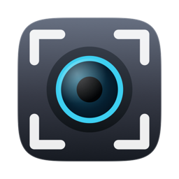

Framing
Zoom and pan to the part of the frame that matters, by scrolling and dragging or by typing an exact value. Mirror it if you read your own picture the other way round.

OpenCamraHub Source on GitHubOpenCamraHub is a Mac app that turns the camera you already have into a webcam you are happy to be seen on: the right part of the frame, a corrected picture, your Key Lights and your logo — all saved into scenes you switch with one key. Choose {{CAMERA}} as the camera in Teams, Zoom or Meet.
Download OpenCamraHub {{VERSION}} How to install
Version {{VERSION}}, maintained. Needs macOS 14 or later on Apple silicon.
Everything below is saved into the selected scene as you change it — there is no save button — and comes back together when you switch to it.
Zoom and pan to the part of the frame that matters, by scrolling and dragging or by typing an exact value. Mirror it if you read your own picture the other way round.
Exposure, black and white point, midtones and contrast, white balance on both axes, separate shadow and highlight tints, saturation. Ten sliders for cameras that offer none of their own — an HDMI grabber like a Cam Link exposes nothing, and macOS offers no manual values either.
Elgato Key Lights are found on your network and driven from the app: on and off, brightness, colour temperature. A scene can own its lights, so they follow the scene and go dark when you pause. A lamp lighting the rest of the room is left alone.
A PNG with transparency — a logo, a lower third, a handle. Drag it in the picture or type exact percentages, and snap it to any of nine positions. It is composited in the same GPU pass as everything else.
Crop, mirror, the ten corrections and the overlay are one Metal pass, so the look costs no more than the picture did. A call only ever receives 1080p, and a camera that captures more has pixels to spare: the crop fills the picture with real detail instead of stretching a smaller one.
The app tells you how far that reaches. The inspector says Stays sharp up to 2.0× for a 4K source, and a small soft badge appears on the picture the moment you zoom past it.
OpenCamraHub only frames a live camera. It does not record, does not touch audio, and has no accounts. It is an independent project and is not affiliated with Elgato or Corsair.
A plugin for OpenDeck and the Elgato Stream Deck puts scenes, pause, zoom and your key lights on real keys. The keys follow the app: switch a scene with a hotkey or in the window, and the deck lights up the new one.
Press the live scene again to pause. Every key's label is yours to set, with placeholders for the scene, the light and the zoom.
Download OpenCamraHub {{VERSION}}
Signed with a Developer ID and notarized by Apple. Needs an Apple silicon Mac running macOS 14 or later. Updates install from inside the app.
OpenCamraHub collects nothing. There is no account, no analytics and no telemetry, and the picture never leaves your Mac except through the call you put it in. The app checks GitHub once a day for a newer version, and talks to Elgato Key Lights on your local network if you have any. This page sets no cookies and loads nothing from other sites.